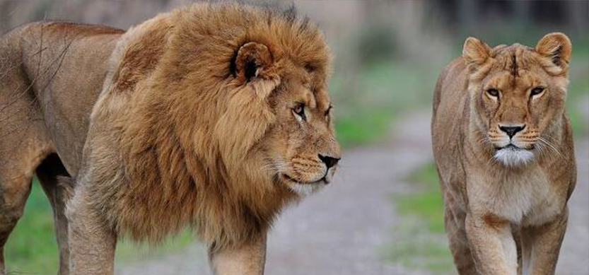
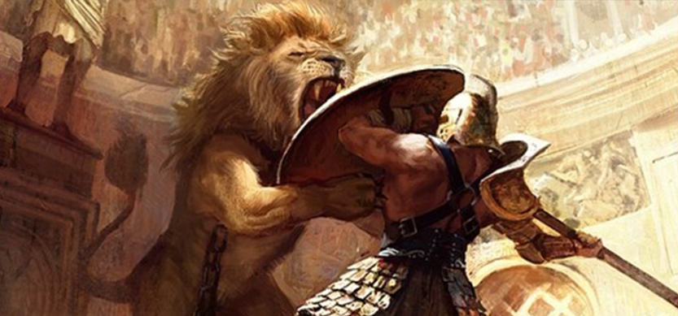
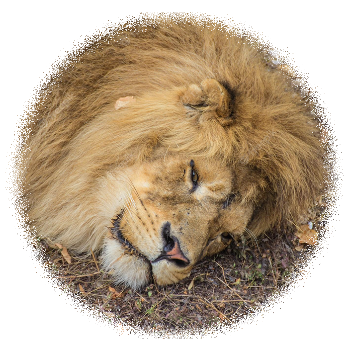

Panthera leo leo
(야생 전멸)
바바리사자(Panthera leo leo)는 사자의 아종(亞種)으로, 북아프리카 일대에서 생존했다.
큰 것은 몸길이 3.3m, 체중 270kg 이상으로 사자의 여러 아종 중에서도 특히 컸다. 다른 사자와는 달리 산 속의 숲에서 살았으며 반사막이나 사막에서도 살았다.
Why are Panthera leo leo extinct in the wild?
 바바리 사자의 개체 수가 급격하게 감소한 시기는 로마 시대였다. 6세기에 걸쳐 수천 마리의 바바리 사자는 콜로세움 경기장에서 죽임을 당했다.
그 이후 남아 있던 야생 바바리사자는 현지 가이드를 앞세운 유럽인의 대규모 사냥으로 완전히 자취를 감췄다. 특히 광범위한 산림 벌채와 인간의 정착지 확장도 멸종을 앞당겼다. 야생의 마지막 바바리사자는 남획에 의해 알제리에서는 1891년에, 모로코에서는 1922년에 마지막 개체가 사살되었다. 그러나 모로코의 국왕이나 에티오피아의 하일레 셀라시에 1세 황제가 기르던 사자들은 바바리 자로 추정되며, 그 사자들의 후손이 아직 남아 있어 완전히 전멸되지는 않았다. 세계 각국의 동물원에 약 70여 마리가 남아 있는 것으로 추정되나 그 중 바바리 사자임이 확실한것은 20여 마리다.
What should we feel when we see this stupidity?
|  | 동물 사냥은 과거 상류계층의 유희였고 권세의 상징이었으며 지위가 높고 부유할수록 사냥을 벌이는 규모도 컸다. |
|---|